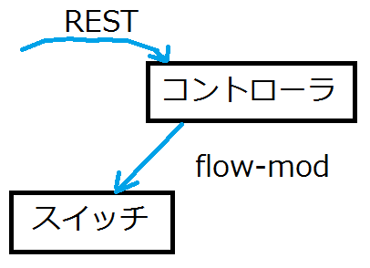
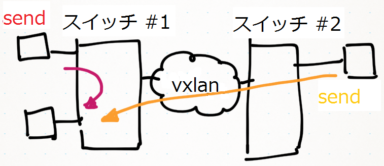

Virtual Network Platform の紹介
2013.7.27 Trema day #3
すぎょう
Virtual Network Platform の紹介
今週(7/23)、オーバーレイで仮想ネットワークを作成できるアプリケーションをGitHubで公開
Tremaベースのアプリケーション
GPL2
ソース https://github.com/trema/virtual-network-platform
概要 http://trema.github.io/virtual-network-platform/
仮想ネットワークの作成と管理を行う
物理ネットワーク上に複数の仮想ネットワークを作成することができるポートは、Datapath ID、ポート名またはポート番号、VLAN IDで識別
VXLANベース
複数の仮想ネットワークは、VXLANをベースに作成スイッチには、VMや物理マシン、レガシーなどをつなげることを想定
アーキテクチャ
READMEに付属しているアーキテクチャアーキテクチャ
Virtual Network Manager は、Backend DBから情報を取り出し、必要に応じてOpenFlow Switch やVXLAN tunnel endpoint の設定を行う
Configuration Frontend は、仮想ネットワークの管理のための REST インターフェースを持ち、Backend DBに情報を書き込む
アーキテクチャ
Virtual Network Agent は、Virtual Network Manager から VXLAN tunnel endpoint の設定要求を受け処理する
VXLAN Tunnel End-Point は、VXLAN tunnel endpoint 処理を行う部分
OpenFlow Switch は、Open vSwitch (version 1.4.X)。ubuntu 12.04 のパッケージを利用
VXLANとOpen vSwitch
linux kernel 3.7以降のvxlan driverも利用可能VXLAN部分
VXLAN部分は、hogelanをベースに改造
ユーザ空間で動作
ユーザ空間で動作するのは、作りやすさを優先したため
ネットワークIDをVNIに割り当てている
hogelan https://github.com/upa/hogelan
プロアクティブ型
 設定の要求をきっかけに、設定を行う。リアルタイムではないVXLANの設定が必要かの判断は、コントローラが行う。複数のスイッチにまたがる場合は、VXLANの設定をする
プロアクティブ型

 MACアドレスを登録しない場合は、ブロードキャストと同等の動きとなる
MACアドレスを登録すると、ユニキャストはフローにしたがって転送される
VXLANの学習とは別、連動していない
API
Trema/appsのsliceable_switchとよく似ている
- RESTベース
- JSONフォーマット
- ネットワーク、ポート、MACアドレスの３つ
- 新規、削除、一覧、詳細
- "486 Busy Here"に注意
http://trema.github.io/virtual-network-platform/doc/api/api.html
ネットワークの作成、削除
ネットワークの作成
curl -v \
-H "Accept: application/json" \
-H "Content-type: application/json" \
-X POST \
-d '{ "id": 123, "description": "Virtual network #123" }' \
http://192.168.1.254:8081/networks
curl -v \
-H "Content-type: application/json" \
-X DELETE \
http://192.168.1.254:8081/networks/123
ポートの追加、削除
ポートを指定されたネットワークへ追加
curl -v \
-H "Content-type: application/json" \
-X POST \
-d '{ "id": 1, "datapath_id": "1", "name": "veth0-0",
"vid": 65535, "description": "veth0-0 on switch #1" }' \
http://192.168.1.254:8081/networks/123/ports
curl -v \
-H "Content-type: application/json" \
-X DELETE \
http://192.168.1.254:8081/networks/123/ports/1
MACアドレスの追加、削除
MACアドレスを指定されたポートに追加
curl -v \
-H "Content-type: application/json" \
-X POST \
-d '{ "id": 1, "datapath_id": "1", "name": "veth0-0",
"vid": 65535, "description": "veth0-0 on switch #1" }' \
http://192.168.1.254:8081/networks/123/ports
curl -v \
-H "Content-type: application/json" \
-X DELETE \
http://192.168.1.254:8081/networks/123/ports/1
今後の予定
決まっていない